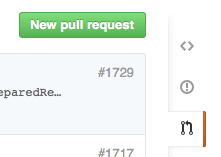

Contributing to
Open Source
as a Beginner
Bugs in open
source packages
☹
Find the bug
def fix_up_paths(items):
for item in items:
name, path, type = item
if not os.path.isfile(path):
path = fix_up_path(path)
items.remove(item)
items.append((name, path, type))
return items
Fix the bug
def fix_up_paths(items):
new_items = []
for item in items:
name, path, type = item
if not os.path.isfile(path):
path = fix_up_path(path)
new_items.append((name, path, type))
return new_items
Then I used my locally fixed version forever.
The End
Recipe for a pull request
- Fork the repository on GitHub
- Put changes in a branch
- Run tests
- (Write a test?)
Push the Scary Button
⇓

Wait for feedback...
...
...
...
"Looks good"
Summary
- You can find bugs
- You can fix bugs
- Branch, test, pull request
- Most pull requests are short
- You don't need to be a superstar!